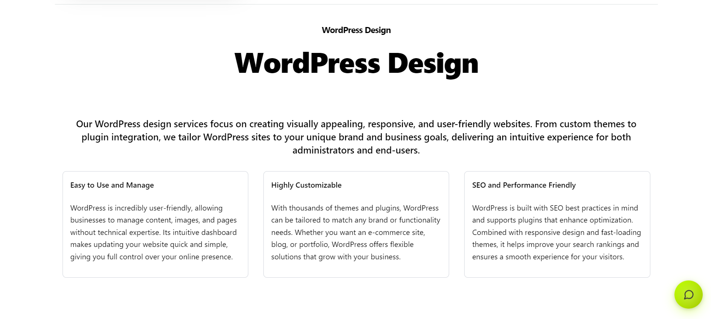

Payload CMS dashboard
1. Login Page
Section titled “1. Login Page”After creating your admin account during onboarding, go to the Login Page and sign in using your credentials. Once logged in successfully, you will be redirected to your Dashboard.This user will have an admin account with full access and all roles.
2.Templates
Section titled “2.Templates”The Templates collection is used to manage and display your portfolio or completed projects. Each template represents a single project or work item that you want to showcase to customers.
Templates are organized category-wise, making it easy for visitors to explore your work based on technology or platform. ✨ Key Features
-
Create unlimited portfolio items
-
Assign each project to one or more categories
-
Display projects dynamically on the website
-
SEO-friendly structure
-
Image-based showcase for better visual impact
3. Categories
Section titled “3. Categories”The Categories collection helps organize templates (portfolio items) into meaningful groups. Categories allow users to quickly filter and find work related to specific platforms or technologies.
Once a category is created, you can customize its content by adding titles, descriptions, and additional page content. This enables you to provide meaningful context and improve the user experience for visitors browsing your site.

-
Create, edit, and delete categories from the backend.
-
Add descriptive titles and rich content for each category.
-
Organize content to improve site navigation and user engagement.
-
Full flexibility to update categories as your content evolves.

4 Services
Section titled “4 Services”The Services collection is used to define and display the services your company or team provides.
Services appear on the homepage, and each service has its own dedicated detail page.
5 Blogs
Section titled “5 Blogs”The Blogs collection allows you to publish articles, updates, tutorials, and announcements directly from the Payload dashboard.
This helps with:

6 Teams
Section titled “6 Teams”The Teams collection is used to manage team members and display them on the website.
It helps build trust by showcasing the people behind the work.
7 Review Section
Section titled “7 Review Section”The Review Section allows website visitors or clients to submit feedback about the work directly from the website. Submitted reviews are not published immediately, ensuring full control over displayed content.Only reviews marked as Published by the admin will appear on the website

8 AI Chat Integration
Section titled “8 AI Chat Integration”This template includes a fully integrated AI-powered chat system that provides instant responses to customer queries directly on the website.
How It Works
API Key Setup
Create a Google Gemini API key from the Google Developer Console. click Here for Details
Add the API key securely to the .env file.
No hardcoded keys — ensuring security and best practices.